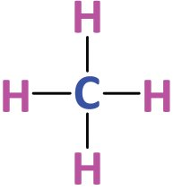
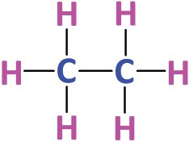

You have understood the position and importance of the element
carbon in the periodic table. Carbon is a component in a variety
of compounds. The very high ability for catenation and its ability
to form different types of chemical bonds with other elements
make it different from other elements. You also know organic
chemistry is the branch of chemistry that deals with the carbon
compounds.
Let us familiarise the structure of different types of organic
compounds, the method of IUPAC nomenclature etc.
The valency of carbon is four.
Look at the representation given below.
|
− C−
|
| |
C= C
− C≡ C−
Page 25
Figure fig_ch06_p025_01 (Page 25)
Nomenclature of organic compounds and isomerism
The given structures indicte the valency of carbon. Imagine that
hydrogen atoms are added to these structures.
Complete the given structures.
H
|
H −C −H
|
H
| |
C=C
| |
−C ≡ C−
Certain organic compounds and their molecular formulae are
given here.
Structure of the Compound
Molecular formula
H H
|
|
H−C−C−H
|
|
H H
H
H
C=C
H
H
C 2H 6
C 2H 4
C 2H 2
H−C≡C−H
Table 6.1
What are the characteristics of the compounds given in the table?
They are hydrocarbons
There are compounds having single bond, double bond and
triple bond between the carbon atoms.
H H
|
|
H − C − C − H,
|
|
H H
H H
|
|
C=C,
|
|
H H
H−C≡C−H
The structure of these compounds can also be written in
condensed way as CH3 − CH3, CH2 = CH2, CH ≡ CH . Such a
representation is known as condensed formula.
The open chain hydrocarbons having only single bond between
the carbon atoms are included in the Alkane category.
In alkanes, as all the four valencies of each carbon atom are
satisfied by single bonds, they are known as saturated
hydrocarbons.
Complete the table given below.
Number of
Carbon atoms
Structure of
Alkanes
Condensed formula
Molecular
formula
1
CH4
CH4
2
CH3 - CH3
C2 H 6
3
CH3 - CH2 - CH3
C3 H 8
4
...........................
CH3 - CH2 - CH2 - CH3
........
5
...........................
...........................
C5H12
Table 6.2
IUPAC
IUPAC (International Union of Pure and Applied Chemistry) is an international
organisation that strives to carry forward the new trends in the field of chemical
sciences happening worldwide and thereby contribute to the application of chemistry
for the service of mankind. This organisation, founded in 1919, has its headquarters at
Zurich in Switzerland. IUPAC takes the lead role in the naming of elements and
compounds, standardisation of atomic weights and physical constants, recognising
new terms in chemistry etc.
98
What is the relationship between the number of atoms of
carbon and hydrogen in alkane?
If an alkane contains 'n' carbon atoms, how many hydrogen
atoms will be there?
If so, can you deduce a general formula for alkanes?
What is the difference between the number of
carbon atoms and hydrogen atoms in CH4 and C2H6? Are organic compounds
Is the difference same in the case of C2H6 and C3H8
What is the difference between the molecular formulae
of any two successive alkanes?
A series of such compounds is called a homologous
series.
See the characteristics of a homologous series.
The members can be represented by a general
formula.
Successive members differ by a CH2 group.
Members show similarity in chemical properties.
There is a regular gradation in their physical
properties.
biocompounds?
Once it was believed that
organic compounds could be
produced only from plant or
animal based substances. But
in 1828, the German Scientist
Friedrich Wohler prepared the
organic compound urea from
an inorganic compound
named ammonium cyanate.
This paved the way for the
preparation of a large number
of organic compounds from
inorganic substances.
Heat
NH4CNO → NH2-CO-NH2
Hydro carbons having double bond or triple bond between
carbon atoms are commonly known as unsaturated
hydrocarbons.
Hydro carbons having a double bond between any two carbon
atoms are considered as Alkenes.
Complete the table given below (Table 6.3).
No of
Carbon atoms
Analyse Table 6.3 and find the number of hydrogen atoms
in an alkene with 'n' carbon atoms.
If so, can a general formula of alkenes be deduced? Try to
write it.
Check whether the alkenes given in the above table are members
of a homologous series.
Look at the structure of a hydrocarbon carrying a triple bond
between two carbon atoms (Figure 6.1).
Figure 6.1
Hydrocarbons having a triple bond between any two carbon
atoms are named as alkynes.
Complete the table 6.4.
No of Carbon
atoms
Structure of
the alkyne
Condensed
formula
Molecular
formula
2
CH ≡ CH
C2H2
3
CH ≡ C − CH3
C3H4
4
......................
..........
......................
..........
5
......................
Table 6.4
Analyse Table 6.4 and find out how many hydrogen atoms
would be present in an alkyne with 'n' carbon atoms.
If so, can a general formula of alkynes be deduced?
Try to write the general formula of alkynes?
Check whether the alkynes given in the above table are members
of a homologous series.
100
Page 29
Figure fig_ch06_p029_01 (Page 29)

Figure fig_ch06_p029_02 (Page 29)

Figure fig_ch06_p029_03 (Page 29)
Nomenclature of organic compounds and isomerism
Look at the classification of the hydrocarbons that we have
discussed so far.
Hydrocarbons
Alkane
Alkene
Alkyne
C-C
C
C
CnH2n+2
CnH2n
C
C
CnH2n-2
Nomenclature of hydrocarbons
Organic compounds are found in large numbers and have
complex structures. Hence naming of organic compounds is a
difficult task.
IUPAC has put forward some rules for the naming of
hydrocarbons. What are the main points to be considered while
naming hydrocarbons?
Number of carbon atoms
Nature of the chemical bond between the carbon atoms.
Word roots are selected based on the number of carbon atoms.
C1
C2
C3
C4
C5
=
=
=
=
=
Meth
Eth
Prop
But
Pent
C6
C7
C8
C9
C10
=
=
=
=
=
Hex
Hept
Oct
Non
Dec
Nomenclature of Unbranched Alkanes
Examine the given structural formula, molecular formula and
IUPAC names of some alkanes.
For more
understanding open
'Chemistry for Class
X' in 'School
Resources' of IT @
School Edununtu
and play the
animation 'Organic
samyuktangalnamakaranam' from
the page 'Organic
samyuktangalnamakaranavum
isomerisavum'.
Propane
Have you seen any special features in these names?
How are the names derived from the word roots?
Alkanes are named by adding the suffix 'ane' along with the word
root that denotes the number of carbon atoms.
Meth + ane → Methane
Eth + ane → Ethane
Word root + ane → Alkane
Write the IUPAC names of all the alkanes in Table 6.2.
Nomenclature of Branched Hydrocarbons
This chain contains 5 carbon atoms. See another chain with the
same number of carbon atoms.
What is the change in the carbon
chain here? Isn't it clear that a
carbon atom has formed a
branch?
Alkyl Radical
Shall we write the
In saturated hydrocarbons, all valancies structural formula of
of carbon atoms are satisfied by the
hydrocarbon
hydrogen. When a hydrogen atom is obtained by adding
removed from an alkane, it changes to a hydrogen atoms to this carbon chain?
reactive group of atoms. These are According to the IUPAC rules of nomenclature,
radicals. The radical formed by the the longest chain (with the maximum number
removal of a hydrogen atom from of carbon atoms) should be considered as the
main chain and the remaining carbon atoms are
methane is the methyl radical.
treated as branches. The position of the branches
can be found out by numbering carbon atoms
Similarly,
is named an in the main chain.
ethyl radical and
Numbering of the carbon atoms
is named a propyl in the chain should be done in
such a way that the carbon atom
radical.
carrying the branch gets the
In general, they are known as alkyl
lowest number.
radicals and are represented as R
Let's see how an IUPAC name is given to the compound shown
here.
See the two ways in which the carbon chain is numbered.
(1)
(2)
Which of these chains has the lowest number for the carbon atom carrying the branch?
Number of carbon atoms in the main chain
:
Word root
:
Suffix
:
Name of the alkyl radical coming as branch
:
Position of the branch
:
IUPAC name = 2-Methyl butane
Position number of branch + hyphen + name of radical + word root + suffix
A hyphen (−) is used to separate numerals and alphabets while writing the IUPAC
name.
Compound
.....................
.....................
CH3
CH2
CH
CH2
Position of
branch
Number of carbon
atoms in the
longest chain
Name of
branch
Write IUPAC names of the given hydrocarbons by identifying the longest chain and
the position of branch (Table 6.3).
Nomenclature of hydrocarbons with more than one branch
If the same branch appears more than once in a carbon chain, the
number of branches are to be indicated using prefixes like di
(two), tri (three) etc.
If the same type of branch is present more than once, as per rule,
numbering should be done either from left to right or from right
to left so as to get the lowest number for the branch coming first
in the longest chain.
1
2
3
4
5
6
7
7
6
5
4
3
2
1
For example
Number of carbon atoms in the main chain:
7
Number of branches
:
2
Position of the first branch while
numbering from left to right
:
2
Position of the first branch while
numbering from right to left
:
4
Correct way of numbering
:
left to right
IUPAC name
: 2, 4-Dimethylheptane
Some structural formulae are given below. Name them.
Number of carbon atoms in the main chain
Number of branch/branches
Position of the first branch while
numbering from left to right
Position of the first branch while
numbering from right to left
Recommendations for the
nomenclature of branched
hydrocarbons
Number the carbon atoms in the main chain of
the compound given above. Put a 'ü' against
the correct position numbers of the branches. $ Find out the main chain and identify
the branch/branches.
$ Numbering should be done from the
end in which the branch occurs.
3,5
IUPAC name.
$ In case of hydrocarbons with more
Note the compound given below.
than one branch, the main chain
should be numbered from the end
nearest to the first branch.
$ If the number of the first branch
Number the longest chain of this compound
becomes equal from both sides the
from left to right and from right to left.
next branch is to be considered
consecutively.
In both cases, isn't the position number of the
2,4
first branch the same?
Which is the second branch?
When does this branch get the lowest number?
Put a 'ü' mark against the correct one
While numbering from left to right
While numbering from right to left
IUPAC name : 2,3,5 - Trimethylhexane
Write the IUPAC name of the compound given below.
-------
If a carbon atom has two identical branches, the number of
their position should be repeated.
See the given compound
Number of branches present in this compound :
Name of the branches
Nomenclature of unsaturated Hydrocarbons
Classify and tabulate the following compounds into alkanes,
alkenes and alkynes (Table 6.5)
C5H10 , C6H10 , C2H4 , C5H12 , C6H12 , C7H12 , C10H22 , C4H10 , C4H8 , C4H6
Alkane
Alkene
Alkyne
Table 6.5
$
Can you write the structural formula of the compound C2H4?
Replace the 'ane' in the IUPAC name of the alkane with 'ene'
Alk + ene = alkene, The IUPAC name of C2H4 is Ethene.
One of the structural formulae of the hydrocarbon C4H8 is given
below.
Notice the position numbers given to the carbon atoms.
(Method 1)
(Method 2)
While numbering th ecarbon atoms, during IUPAC naming,
the carbon atoms linked by double bond should be given the
lowest position number.
Accordingly, it is in method (1) that the lowest position numbers
are given to the doubly bonded carbon atoms. What will be the
IUPAC name of the compound
then?
But-1-ene
$
If so, what will be the structural formula of But-2-ene.
$
While naming the alkenes the position of the double bond
is also considered.
IUPAC name of the compound
Tick 'ü' the right one.
Pent-3-ene
Pent-2-ene
Can't you name alkynes too, in the same way?
Add suffix 'yne'
Alk + yne = Alkyne
Ethyne
Word root + Position of triple bond + Suffix
But-2-yne
How many hydrocarbons can be written by changing the postion
of triple bond in this compound? Try to write their IUPAC names
also.
Cyclic or Ring Compounds
$
You know that carbon atoms combine together to form cyclic
compounds.
Cyclic or ring compounds are classified into two.
Cyclic compounds
Alicyclic
compounds
Aromatic
compounds
Alicyclic Hydrocarbons
Alicyclic hydrocarbons are cyclic hydrocarbons similar to open
chain hydrocarbons like alkane, alkene and alkyne.
$
108
Structure some alicyclic hydrocarbons and their IUPAC
names are given below.
H
H
C
C
H
H
H
H
C
H
H
H
H
H C C
C
H
C
C C
H
H
H
H
Cyclopropane
H
H
Cyclobutane
C C
H
H
Cyclobutene
Aromatic Hydrocarbons
Aromatic compounds are cyclic
compounds having their own aroma.
Benzene is an aromatic compound
having industrial importance. Note
down its structure.
Try to write down the molecular
formula of Benzene.
Functional Groups
Carbon and hydrogen are not the only elements present in organic
compounds. There are other atoms and groups of atoms present
in the place of hydrogen atoms in organic compounds. For
example methanol is a compound in which a hydrogen atoms in
methane is replaced with an
OH group. Similarly, the
compound HCOOH which has one carbon atom is called
methanoic acid.
The chemical and physical properties of methane are quite
different from those of methanol and methanoic acid.
The presence of certain atoms or groups imparts certain
characteristic properties to organic compounds. They are
called functional groups.
Let us familiarise ourselves with some of the functional groups.
1.
Hydroxyl Group ( OH)
See some compounds containing
OH group.
CH3 OH, CH3 CH2 OH
The presence of an OH group in the carbon chain is the reason
For more experience
open 'Chemistry for
Class X' in 'School
Resources' of IT @
School Edubuntu,
animation page
'Organic
samyukthangal
namakaranavum
isomerisavum' and
play 'Organic
samyukthangalnamakaranam'.
for the important properties of these compounds. Therefore
OH group can be considered as a functional group.
The compounds having OH (hydroxyl) as the functional group
are commonly called alcohols.
The naming of alcohols is done by replacing 'e' from the name of
the corresponding alkane with 'ol'.
Alkane - e + ol ® Alkanol
Ethane - e + ol ® Ethanol
See the compound given below.
$
Write its molecular formula
If so, what about this compound?
$
Write its molecular formula
What is the difference between the two?
Here, the position of functional group changes.
Therefore, while writing the IUPAC names of these two
compounds the position of functional group is to be added. The
carbon atom having the functional group should be given the
lowest number. Here the first compound can be called
propan -1- ol
$
Then try to write the IUPAC name of the second compound.
⎡
⎣
2. Carboxylic Group ⎢
or
⎤
⎥⎦
Compounds with functional group
are known as
carboxylic acids. While writing IUPAC names of these
compounds, the name of the main chain is terminated with the
suffix 'oic acid'.
alkane - e + oic acid ® alkanoic acid.
Vinegar is a carboxylic acid. Its formula is
The IUPAC name of this compound is Ethanoic acid.
If the functional group contains a carbon atom, that carbon
atom should be treated as part of the main chain.
That is, ethane - e + oic acid ® Ethanoic acid
Methanoic acid.
Propanoic acid
The naming is done after counting the carbon atom in the
functional group as a part of the main chain.
3. Halo group
Organic compounds with functional groups fluro ( F), chloro
(Cl), bromo ( Br) and iodo ( I) are called Halo compounds. The
method of giving IUPAC names to these compounds is given
below.
The position of the halo group + - + name of halo group +
name of alkane.
1-Chloropropane
2, 2-Dichlorobutane
4. Alkoxy Group (
)
Ethers are compounds with an alkoxy group. Let us see their
IUPAC names.
Ethoxyethane
Methoxyethane
That is, ethers are named as alkoxyalkanes.
Here among the alkyl radicals on either side of the
group
the longest alkyl group is taken as alkane and the other as alkoxy
group.
Isomerism
See the two compounds given below.
For more experience
open 'Chemistry for
Class X' in 'School
Resources' of IT @
School Edubuntu,
animation page
'Organic
samyukthangal
namakaranavum
isomerisavum' and
play 'Organic
samyukthangalnamakaranam'.
$
What are the similarities between these two compounds?
Molecular formula :
Functional group :
$ What is the difference between them?
Isn't the position number of carbon atoms to which the
group is attached different? These compounds have the same
molecular formula. But the position of the functional group
differs. These compounds are different even though they have
the same molecular formula. They are known as Isomers. These
compounds differ in their chemical and physical properties.
Compounds having same molecular formula but different
chemical and physical properties are called Isomers. The
phenomenon is called Isomerism.
In the examples given above, the isomers differ in their structural
formulae. Let us examine some other examples in which the
structural formulae are different.
Examine the two compounds given below.
Try to write the molecular formula. Can't you write the IUAC
names of these compounds?
$
What is the difference between them?
Do they have the same chain structure?
Compounds with the same molecular formula but possess a
difference in the chain structure are called 'Chain isomers'.
$
What are the functional groups in
$
Try to write down their molecular formula.
,
Are they isomers? Their IUPAC names are respectively
ethanol and methoxy methane.
Compounds having same molecular formula, but having a
difference in their functional groups, are known as 'Functional
isomers'.
Haven't you understood that functional isomers exist as a result
of having different functional groups in compounds with the same
molecular formula?
Examine the two compounds which you have already seen.
See the position of their functional group
. Isn't it different?
See their IUPAC names.
Propan-1-ol
Propan-2-ol
These are position isomers.
If the position of the functional group is different in two
compounds having the same molecular formula and the same
functional group, then they are position Isomers.
$
Try to write down all position isomers of the
compound
.
$
Examine the compounds given below and find out the
isomeric pairs. To which type do they belong?
1.
2.
3.
4.
5.
6.
$
How many position isomers are possible for the
compound
.
Write the structure and IUPAC names of its functional isomers?
$
How many chain isomers are possible for the compound
? Write them down.
$
114
The structural formula of various compounds are given.
Tabulate them into different pairs of isomers. Write down
their IUPAC names also.
Write the structural formulae of all possible isomers of the
compound with molecular formula C4H10O . Identify the
different isomer pairs from them and find the type of
isomerism to which each pair belongs.
4.
Find three pairs of isomers from the compounds given below.
Identify the type of isomerism to which each pair belongs.
a)
Propan-1-ol
b)
2, 2, 3, 3 - Tetramethylbutane
c)
Octane
d) Propan -2- ol
e)
5.
Methoxyethane
The structural formulae of two organic compounds are given.
(i)
6.
118
(ii)
a)
What are the IUPAC names of these compounds?
b)
Write one similarity and one difference between these
two compounds.
c)
What is this phenomenon known as?
Write down the structural formulae of the following
compounds.
a)